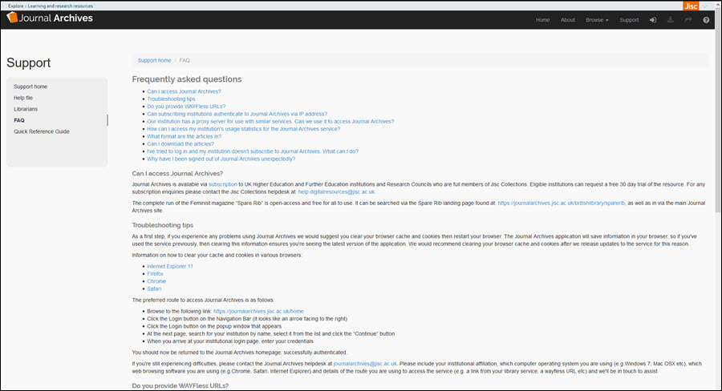

Here at Journal Archives we have collated the A-Level Specifications for the different examination boards and created the following collections to help you read around your subject more fully.
Explore some of the journal titles that contain information about the history of the church, church law and Christian theology
Publication: Church History: Studies in Christianity and Culture
Published: 1961
CUP
Publication: Ecclesiology
Published: 2009
Brill
Publication: Journal for the Study of the Historical Jesus
Published: 2005
Brill
Publication: Journal of Pentecostal Theology
Published: 2002
Brill
Publication: Ecclesiastical Law Journal
Published: 2006
CUP
Publication: Catholic Historical Review
Published: 1995
Proquest
Publication: Journal of Reformed Theology
Published: 2007
Brill
Publication: The Journal of Ecclesiastical History
Published: 1995
CUP
Explore some of the journal titles that contain information about Islamic history and religious practice.
Publication: Journal of Islamic Studies
Published: 1991
OUP
Publication: Islamic Quarterly
Published: 1990
Proquest
A selection of articles covering Jewish religious life and practice.
Publication: European Journal of Jewish Studies
Published: 2007
Brill
Publication: Journal for the Study of Judaism
Published: 1998
Brill
Publication: Review of Rabbinic Judaism
Published: 2001
Brill
Publication: American Jewish History
Published: 1984
Proquest
Publication: Jewish Social Studies
Published: 1942
Proquest
A small selection of articles on topics covering religious experience, the problem of suffering and religious language.
Publication: Theological Studies
Published: 1991
Proquest
Publication: Journal of Empirical Theology
Published: 2007
Brill
A selection of other journal titles on topics within the study of religious ethics in the A-Level specification.
Publication: Journal of the Marine Biological Association of the United Kingdom
Published: 1989
CUP
Publication: Theological Studies
Published: 1986
Proquest
Publication: Theological Studies
Published: 1986
Proquest
Publication: New Testament Studies
Published: 1963
CUP
If you encounter a problem with Journal Archives, see if you can find an answer on our FAQ page.
